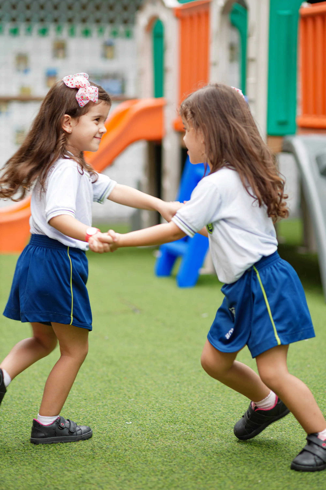
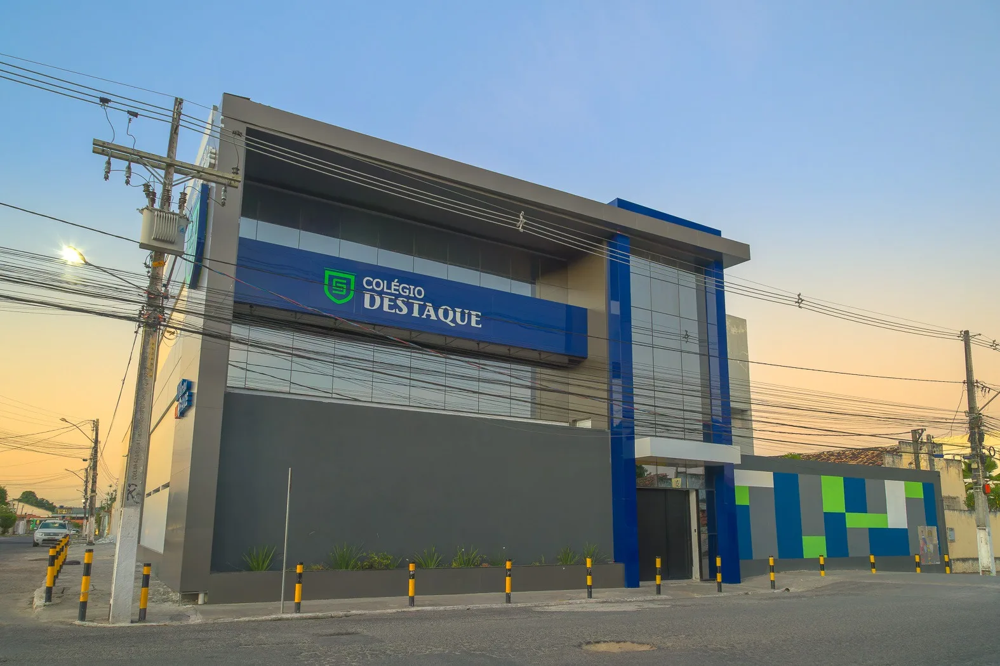
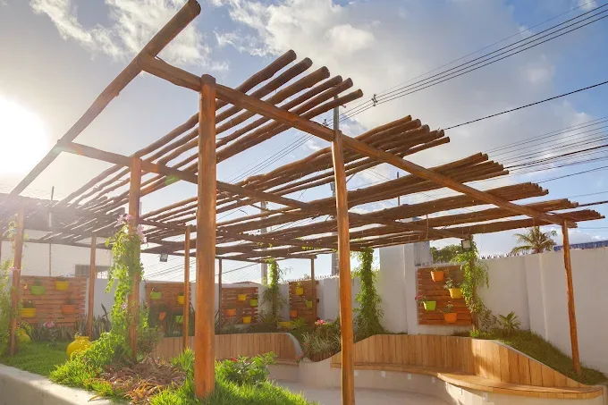
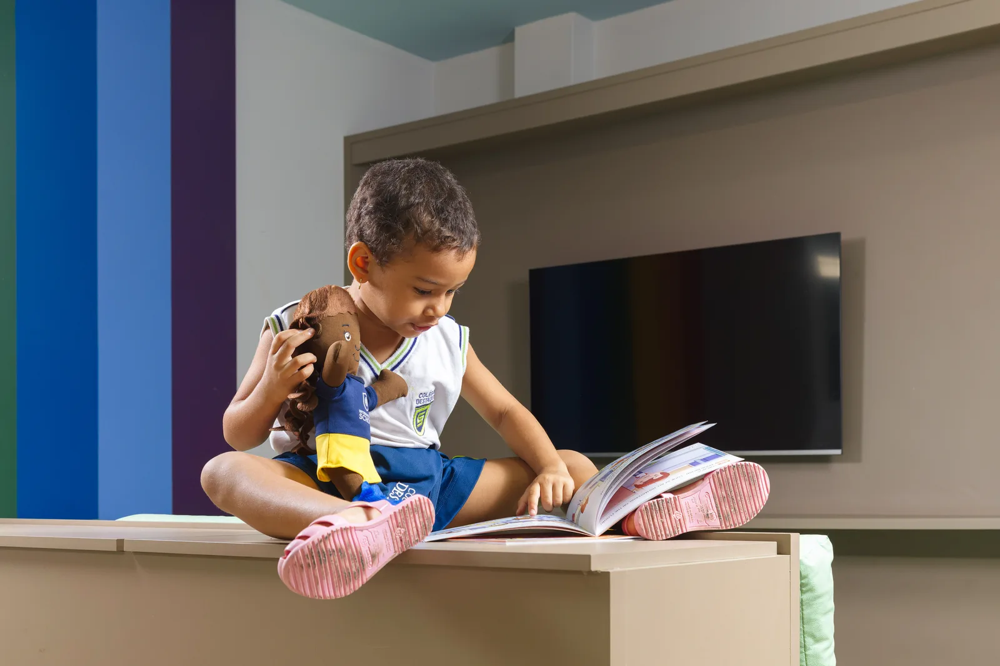
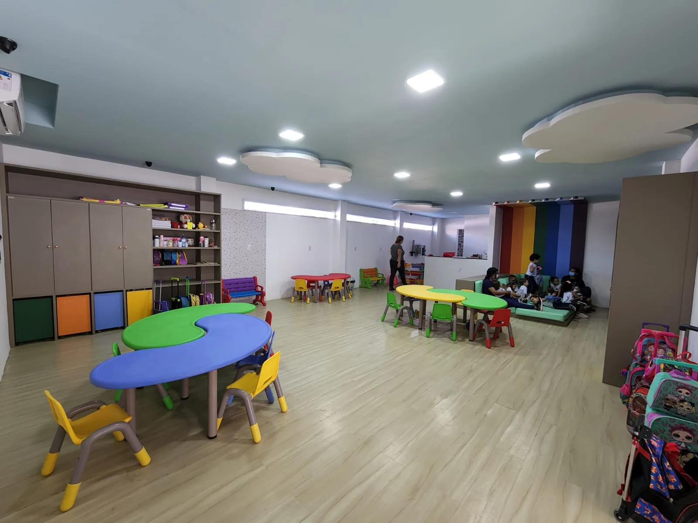
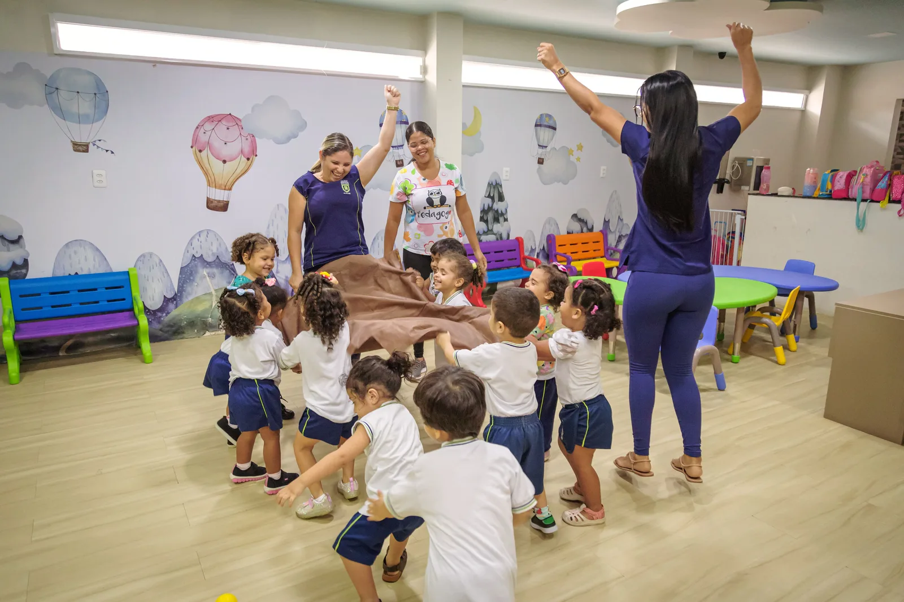
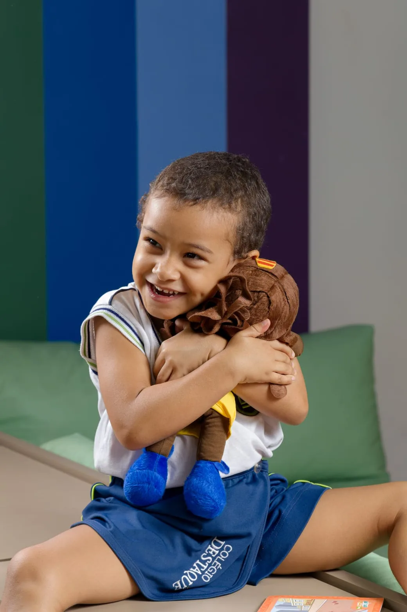

🎓
Ensino de excelência
Metodologia sólida, professores dedicados e preparação de ponta para o ENEM.

Matrículas abertas para 2026. Da Educação Infantil ao Ensino Médio, em Alagoinhas.
Seja DestaqueReconhecido pelos moradores de Alagoinhas como a melhor escola particular da cidade, o Colégio Destaque une tradição de mais de três décadas com inovação pedagógica.
Metodologia sólida, professores dedicados e preparação de ponta para o ENEM.
Roteiros de aprendizagem personalizados e núcleo de psicologia dedicado a cada aluno.
Programa bilíngue (International School), tempo integral e tecnologia no dia a dia.
Ferramentas e suporte para formar alunos empáticos, com autoconsciência e autorregulação, conscientes do seu papel na sociedade.
Desde 2022, jornada estendida com aulas, atividades extracurriculares e acompanhamento pedagógico o dia todo.
Do Grupo 2 ao 7º Ano, vivência diária do inglês desde a primeira infância.
Conhecemos a fundo cada aluno — paixões, desafios e habilidades — para oferecer uma trilha de aprendizagem única.
Suporte emocional individualizado a alunos, famílias e educadores no dia a dia escolar.
Dança, jazz, ballet e teatro com a Ebateka, e Jiu-Jitsu com a Gracie Barra, além da sala de aula.
Aplicativo exclusivo com progresso escolar, notas, tarefas e comunicados em tempo real para as famílias.
Tecnologia e análises para acompanhar o progresso de cada aluno e identificar pontos fortes e de melhoria.
Abordagem focada e estratégias eficazes para que cada aluno chegue confiante ao exame.
Conteúdos atualizados e alinhados às exigências do exame.
Avaliações periódicas no formato ENEM para medir evolução.
Treinamento intensivo para a máxima pontuação na redação.
Apoio na escolha de cursos e carreiras.
*Fonte: Microdados ENEM.






Ao longo de mais de três décadas, o Colégio Destaque foi mais que uma escola; tornou-se o ponto de partida para grandes sonhos. Das salas de aula deste colégio emergiram artistas, empreendedores, médicos e inúmeras outras mentes brilhantes que hoje enriquecem o mundo com suas contribuições.
Porém, celebrar o passado nunca nos fez esquecer do presente, nem do futuro. Com o mundo em constante evolução, não poderíamos permanecer os mesmos. Nos reinventamos, investindo significativamente em estrutura, inovação, tecnologia e, acima de tudo, em pessoas – tanto na capacitação continuada de nossa equipe, quanto na contratação de novos talentos.
Mas, em meio a todas essas mudanças, uma coisa sempre permaneceu inalterada: nossa essência. O amor genuíno pela educação, o cuidado individualizado e a dedicação em moldar não apenas bons estudantes, mas seres humanos íntegros e conscientes.
No Colégio Destaque, mais do que oferecer uma educação de excelência, criamos um lar. Um espaço de acolhimento, onde cada aluno, cada família, sente-se parte da nossa. Porque, ao final do dia, a verdadeira marca de destaque é aquela que fazemos na vida de cada pessoa.
— Equipe Colégio Destaque